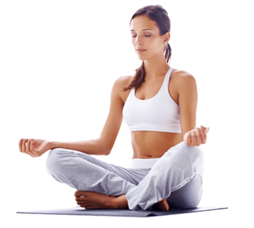

Yoga is an ancient form of exercise that focuses on strength, flexibility and breathing to boost physical and mental wellbeing. The main components of yoga are postures (a series of movements designed to increase strength and flexibility) and breathing. The practice originated in India about 5,000 years ago and has been adapted in other countries in a variety of ways. Yoga is now commonplace in leisure centres, health clubs, schools, hospitals and surgeries.
No. You can join a class suitable for your fitness level. For example, to join a mixed-ability yoga class, you need to be able to get up and down from the floor. Some yoga classes are chair-based.
Yoga offers physical and mental health benefits for people of all ages. And, if you’re going through an illness, recovering from surgery or living with a chronic condition, yoga can become an integral part of your treatment and potentially hasten healing.
Listed below are just a few of the benefits that Yoga has to offer.
Whether you want to learn some basic moves before you take a class, get some tips on where to begin with an at-home practice, or learn a few poses to improve flexibility, here’s a sequence that can get you started.
Do you have any questions about Yoga? Wish to know a bit more? Get in touch with us and we will happily respond
B.K.S. Iyengar